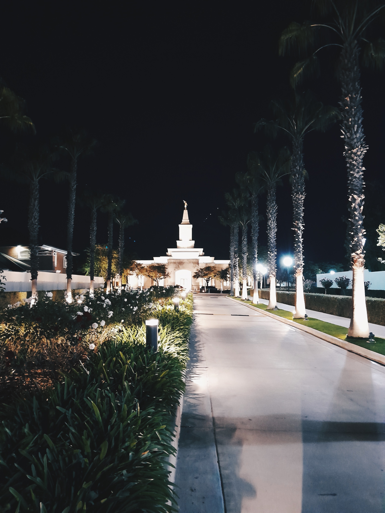

Serving in Argentina
I recently returned home from my mission in Cordoba, Argentina. It was a life-changing experience where I learned Spanish, served the people, and learned how to work hard.
Culture & Food
Argentina is known for its incredible culture. Here is a breakdown of my favorites:

Making a traditional Argentine Asado.
- Favorite Foods
- Asado (Argentine BBQ)
- Empanadas
- Milanesa Napolitana
- Favorite Areas
- Arroyito, Cordoba
- Chilecito, La Rioja
- Uritorco, Cordoba City
- Traditions
- Drinking Mate
- Siesta time
Mission Gallery
The Cordoba Temple at night.
Experience Argentina
This video captures the beauty of the Cordoba Argentina Temple.
LDS Growth in Argentina
You asked for the data on Church growth in Argentina. Here are the historical numbers:
- 1925: Missionaries arrive (6 members baptized)
- 1940: 518 Members
- 1960: 3,456 Members
- 1980: 60,972 Members
- 2000: 300,000+ Members
- 2024: 491,160 Members (4th largest in South America)
Interactive Graph: Global LDS Statistics (Hover to see details)

Need a break? Play Rock, Paper, Scissors!